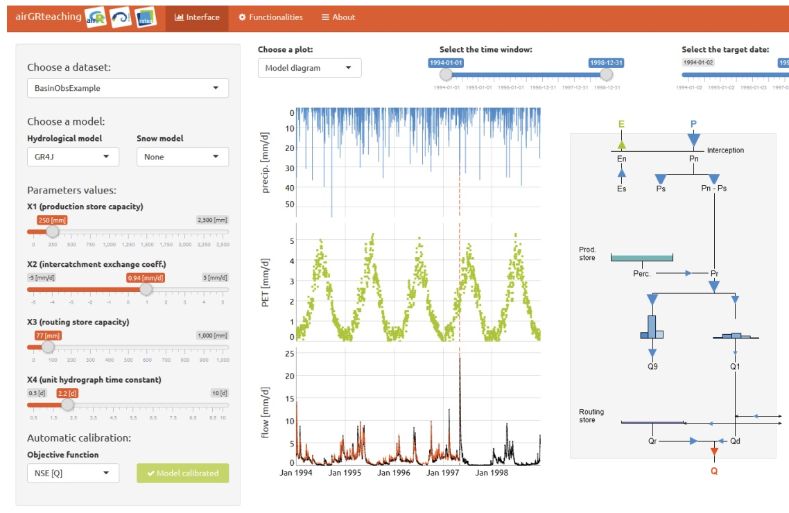

Welcome to BSE3144
Engineering Analysis for Biological Systems using Numerical Methods
Solving engineering problems related to biological systems using numerical analysis including root finding, numerical integration, differentiation, interpolation and numerical solution of ordinary differential equations. Error analysis and programming with engineering software.

The big data problem
We are entering an exciting era within our discipline, where the amount of data available across systems (from the smart watch you may be wearing to remote sensors in fields and streams all over the world collecting data every hour) allow us to make informed decisions across complex systems. The amount of data continues to exponentially increase, highlighting the importance to develop skills to organize, visualize, and analyze data. We also have problems that require numerical approaches to generate solutions within the engineering design process. This semester, we’ll explore numerical and data analysis approaches to tackle BSE problems that will be useful in your future courses, internships, and careers. I am confident that you will walk away with a valuable set of skills that will not only make you marketable, but help contribute to a sustainable future.
About Me
My name is Clay Wright. I grew up around here, actually, spending time in Lynchburg and Blacksburg, VA and Charlotte, NC. I went to elementary school at Harding Avenue, and fondly remember walking to Virginia Tech for field trips. I was always taking things apart, building things, and doing experiments as a kid, so I pretty much always knew I wanted to be an engineer. It took me a while though, to figure out I wanted to be a Biological Engineer. After interning at a pharmaceutical company during my sophomore year at NC State, I knew biology was what I wanted to engineer.
My family and I have been in Blacksburg since Fall 2018. My oldest daughter, Maya, is about to turn 5 next week and has been loving preschool. Lorna will turn 2 in April and is doing everything she can to keep up with her sister. The both thoroughly enjoyed the snow earlier this week. My partner Rachel is an epidemiologist at Fralin Biomedical Institute’s Center for Biostatistics. We love hikes around Pandapas Pond and Hahn Garden, and we’re really looking forward to some more snow days!

I’ve taught Bioprocess Engineering, Intro to BSE, and a new Engineering Biology course-based undergraduate research experience since coming to Virginia Tech. I’m excited to integrate some of the skills and examples from these higher and lower level classes into BSE3144. I am really excited to teach this course because, in my opinion, programming is one of the most valuable, widely translatable skills to have now and increasingly so in the future. I taught an R course for natural scientists while I was a post-doc at University of Washington. I also love R and the community builds and maintains R and R learning tools—I don’t think I have ever had a negative experience asking a question to the community.
Because of the strength of the R community, as well as the broad shift in our fields towards using R and Python, we moved this course to using R instead of MATLAB, back in 2020. Over the past three years, we’ve built this course using our own experiences as well as the many R learning tools available, leveraging material from many instructors across our department and others to help you be successful in our wide-ranging discipline as well as many others. I’m looking forward to adding more biotech examples this Spring.
Course Goals
- Ability to work with (large) data : from data entry to manipulation to visualization
- Basic coding using R
- Confidence in exploring R-packages
- Ability to plan and document analyses proactively
- Ability to identify approach to solve problem and apply the approach (e.g. numerical method)
- Explore & express uncertainty in your solution(s)
- Get to know your fellow students (e.g. network)
Expected Background
- No experience expected in R - we’ll start from the ground up
- Engineering 1215 & 1216 - introduction to engineering problem solving
- Math 1225 & 1226 - we will be building upon the tools of differentiation and integration in this course using computer programming to do all of the mathematics
Teaching Approach
While traditional lecturing works for some topics, this course really requires active participation, as you are really learning a new language as well as problem solving techniques. In essence, success requires you to do the work, you need to practice the language and skills in many different contexts. Think of this as how you might teach someone to ride a bike: first, you might ask your friend to watch a YouTube video, and then even demo the process yourself. The next step would be running alongside the bicycle while holding as your friend develops a sense of balance. The last step would be to give the person a push and watch them ride away. We’ll take a similar approach this semester for every topic following the general weekly schedule below:
| Day | Task |
|---|---|
| Day 0 (Friday): | short video / reading material available to watch/read prior to Monday 11:15 |
| Day 1 - 3: | review out of class material & bring questions to class; and play |
| Day 3 (Monday): | Submit pre-class assignment; Q/A on pre-class material; in-class short presentation; Exercise and code-alongs |
| Day 4 (Tuesday): | More in-class exercise and start assignment |
| Day 5 (Wednesday): | (some BSE team building); work on exercises and assignment; answer questions |
| Day 6 (Thursday): | Finish exercise assignment, due at midnight 12AM |
| Day 7 (Friday): | Begin working on next weeks pre-class material |
Learning
I am mindful that we all have different challenges we face in learning. At the same time, I am also cognizant that the best way to learn the material is to engage, listen, practice, talk your colleagues, get feedback, and repeat.
- In-person learning: join in at 11:15 on Mondays and Wednesdays. These days will augment the off-line material (reviewed before class), opportunity to ask questions, code-alongs with in-class exercises, and a start on out-of class exercises (e.g. homework). I’ll connect to zoom and record and post these in-person sessions. I’ll reevaluate this if overall class participation (e.g. attendance, questions, assignments) begin to drop.
- Asynchronous learning: The easiest and least-time consuming approach to succeed in the course is to review material ahead of time, try things out, and come to class with questions. Procrastination will snowball and make getting your assignments in on time more difficult. Staying on-top of the out of class material will likely mean you can get your homework assignments done in class. Make a calendar event for yourself to review the weeks materials on Friday afternoon, Sunday evening, or whenever is good for you, and don’t blow it off.
- Other resources: We are fortunate this semester to also have a great graduate TA who will be available to help you through in-class work, have some office hours, and be the main person who will grade assignments. We will also potentially have an undergraduate TA who took the class last year to serve as a resources to answer questions and help augment your understanding of the material. More updates on that soon.
Communication Norms
We expect you to have questions - and we’ll be here to answer them. Ask questions on the Canvas Discussion page. Your teaching team will respond to questions within 1-business day, often times much less. This will work well for short questions that can be answered in < 3 sentences. Come to office hours to ask more detailed questions and/or troubleshoot code. If you come to office hours showing what you have tried and what is not working, you will get feedback that leads to a deeper understanding. I want you to show us that you have taken the advice and suggestions from the in-person sessions and out-of-class material. If you come and say you don’t know where to start, either I have failed in the classroom and not given you advice on where to start or you have not tried.
Grades
Course assessments throughout the semester include the following: Concept Checks = low-stake exercises (15%), Problem Sets (%), Project-based assessments (30%). Every week, the low stake exercises will be due Monday before class and Problem Set is due on Thursday at midnight. Note we have a lenient late policy; however, I highly suggest wrapping up on time which will set you up for the following week.
Accessibility & Inclusivity
This is a class that requires you to practice and experiment. Just like learning a foreign language, learning a programming language requires immersion. When you get stuck, ask for help - we want you to succeed. Computing can be hard, no doubt. I have certainly spent hours trying to make something work, only to give up and go for a walk, or take a shower, and have the solution pop into my head. But it’s also rewarding, and we honestly believe all of you can do this with a little help. When you run into challenges, please reach out and we’ll do our best to help you. If you’re struggling with learning the content or not finding the course accessible and positive, reach out and I’ll work to correct it. If there’s something that I can do to make the course more inclusive, let me know. I am receptive to constructive feedback and will reach out for it throughout the course.
Office hours
We will have regular office hours during the week based on survey results. We will monitor the discussion board Monday-Friday to answer questions.
Course Management and Cloud Computing
We’ll use a combination of Canvas/Kritik (course management), Google drive (content), and an online version of R called Posit (cloud computing) throughout the course. We will use Posit cloud throughout the course this year. Posit is a cloud computing version of R/Rstudio that makes it easier for us to get everyone up and running. It also allows us to log in to your project for an assignment and help troubleshoot your issues.
Sign up for a free Posit account using your @vt.edu email and join our class workspace here: https://posit.cloud/spaces/466263/join?access_code=t7_EYM675vTBtBWbCJdZy-GzLB4j6tl9CFB6ibq-